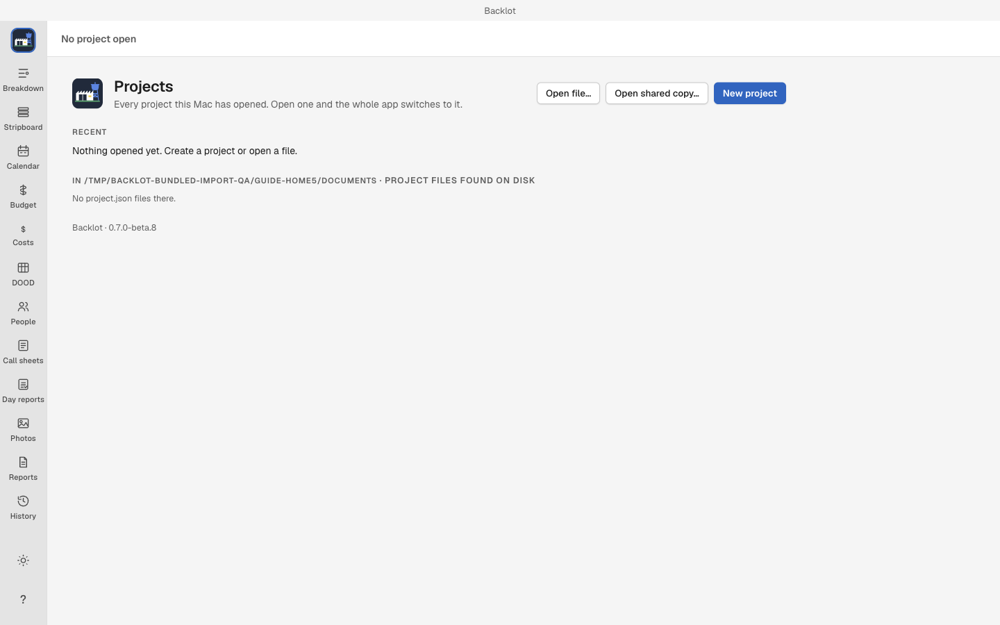
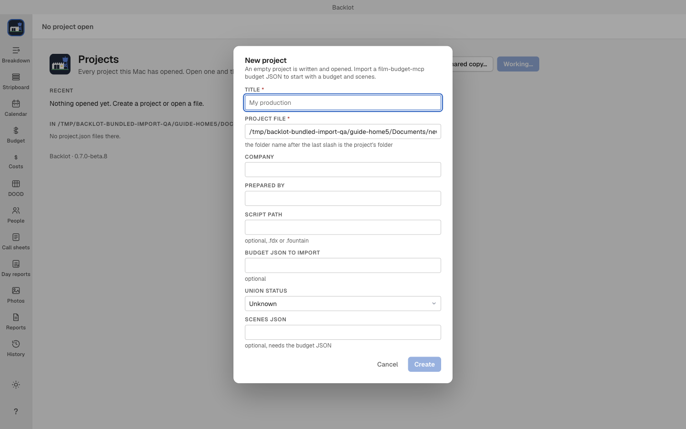
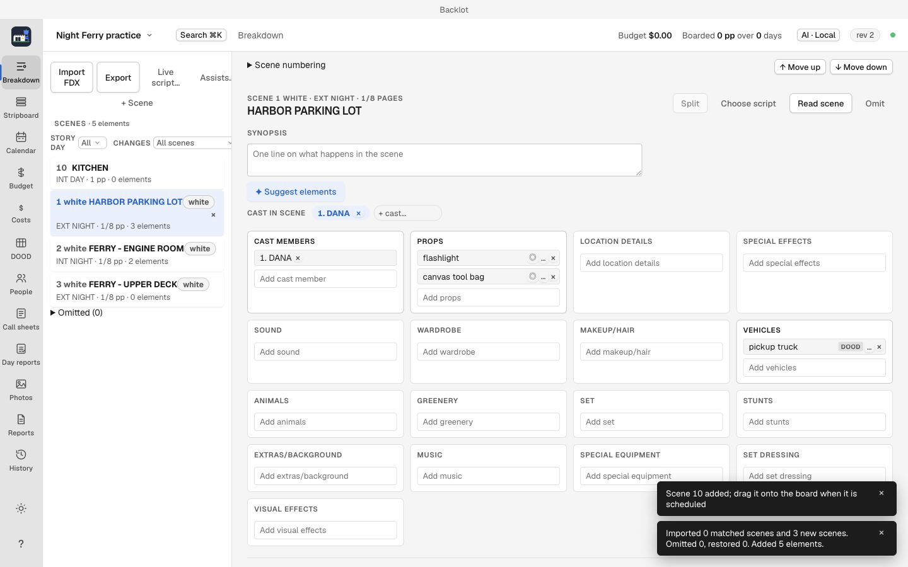
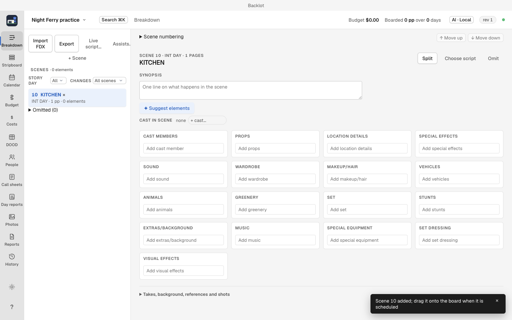

Getting started with Backlot
Start by making a project and importing your screenplay, or add a scene by hand. Backlot includes script import, scene reading, actor sides and PDF output. AI and in-app email are optional setup.
The downloadable app requires an Apple silicon Mac running macOS 13 or later.
Install without using Terminal
- Open the Backlot downloads page.
- Under Assets, click the file whose name ends in
.dmg. The source archives are for developers. - Open the downloaded file. Drag Backlot to the Applications shortcut in the installer window.
- After copying finishes, eject the Backlot installer in Finder.
- Open Applications, then double-click Backlot. If macOS asks whether to open an app downloaded from the Internet, click Open.
If the app will not open, download a fresh DMG from that page and copy it again. If it still fails, report the exact message with your Mac model and macOS version on the public Backlot issue tracker. You do not need to change security settings to follow this guide.
The app does not update itself. To update without Terminal, repeat these steps with the newer DMG and choose Replace when Finder asks about the existing app.
Your first launch

Projects is the starting screen. On a new installation, Recent says Nothing opened yet. Create a project or open a file. An empty list is expected.
Version 0.7.0 beta 8 includes the script reader and desktop PDF renderer. No Python environment, separate Chrome installation or AI download is needed for the workflows below.
Make an empty practice project
Use the title Night Ferry Practice for this example.
- Click New project.
- Click Choose folder. Choose an empty folder where you want to keep this practice project. You can make one in Finder with File > New Folder, then select it in Backlot's folder window. Apple's folder instructions show that step.
- Enter Night Ferry Practice in Title.
- Leave the generated Project file value unchanged for this first project. Backlot has filled in the file location for you.
- Leave Company, Prepared by, Script path, Budget JSON to import and Scenes JSON blank. They are optional.
- For this fictional practice project, choose Non-union under Union status. For a real production, choose its actual status, or Unknown until you have confirmed it. A SAG-AFTRA project also asks for its SAG agreement.
- Click Create. Backlot opens the new project on an empty Stripboard.

The current form shows technical file and JSON fields even when you only want an empty project. Leaving those optional fields blank is the intended route here. Choosing a script path attaches a source file; it does not import scenes.
Keep the whole project folder when you back it up or move it. Its project file, attachments, journal and saved documents belong together.
Import a screenplay
- In the left sidebar, click Breakdown.
- Click Import FDX and choose a
.fdxor.fountainscreenplay. You can use the six-scene Fountain sample or tagged Final Draft sample. - Review the proposed scenes, page lengths, cast and tags. Cancel returns to the unchanged project.
- Click Confirm import when the preview matches your script. The scenes appear in Breakdown and in Stripboard's unscheduled drawer.
- Use Read scene to check a scene's source text. An invalid file leaves the project unchanged; keep the original and report the error if a valid script cannot be read.
Fountain carries no breakdown tags. Both formats work without AI or another reader. Script import and revisions explains revised drafts and missing-scene choices.

Add one scene without importing a script
- In the left sidebar, click Breakdown.
- Click Add scene.
- Enter
1for Scene number andINT. KITCHEN - DAYfor Slug line. - Leave Pages (eighths) at
8, which means one page. Optionally add a short Synopsis. - Click Create. The scene is now in the breakdown.
- Click Stripboard to start arranging your scenes. The new scene waits in the unscheduled drawer until you add it to the board. Follow Stripboard when you are ready to build shooting days.

A created scene is saved in the project folder. You can stop here and return to the project later. No AI account or model download is required for these edits.
Add optional features when you need them
| You want to | What to do next |
|---|---|
| Use AI suggestions | Follow Setup and AI providers. You can close AI settings and keep working. |
| Import a revised screenplay | Follow Script import and review the changes before confirming. |
| Save PDFs or issue a call sheet | Use Save PDF or Issue in the app. The desktop PDF renderer is included. |
| Email a call sheet | Use Call sheets. In-app delivery needs extra configuration; manual email attachments are an alternative after a PDF is saved. |
The sample scripts are fictional and can be imported directly after installing Backlot.
If a step fails
| What you see | What to do |
|---|---|
| Create is unavailable | Fill in Title and check the highlighted required fields. Choose Union status. |
| The project file already exists | Use Open file… to open the existing project, or start New project again and choose a different empty parent folder. Do not overwrite the existing project. |
| A script cannot be read | Keep the original, dismiss the error and check that the file is a valid FDX or Fountain screenplay. The project is unchanged. Update an older Backlot installation if it reports a missing Python reader. |
| An older Backlot asks for Chrome | Update to beta 8 or later. The desktop PDF renderer is now included. |
| AI is not ready | Close the AI sheet and keep working, or follow its setup and retry steps in Setup and AI providers. |
More recovery steps are in Troubleshooting.
Find the next view
Click the view name in the left sidebar. Keyboard shortcuts are optional.
| View | Use it for | Shortcut |
|---|---|---|
| Breakdown | Scenes and production elements | ⌘1 |
| Stripboard | Shooting order and day breaks | ⌘2 |
| Calendar | Shoot dates | ⌘3 |
| Budget | Planned spending | ⌘4 |
| Costs | Money committed and spent | ⌘5 |
| DOOD | Who works on which day | ⌘6 |
| People | Cast, crew, contacts and locations | ⌘7 |
| Call sheets | Daily calls and instructions | ⌘8 |
| Day reports | What happened on the shoot day | ⌘9 |
Photos, Reports and History are further down the sidebar. The appearance button switches Light, Dark and Match macOS. The AI pill at the top opens AI settings when you choose to use them.
Homebrew alternative
If you already use Homebrew, you can install with these commands instead of the DMG:
brew tap MIM18-code/backlot
brew trust MIM18-code/backlot
brew install --cask backlot
Homebrew requires explicit trust for third-party taps. To update, run brew upgrade --cask backlot.
Video walkthrough
First launch and an empty practice project · Captions. See video notes and draft narration.